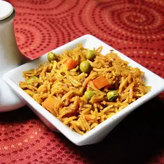

Pizza Recipe

Pilaf or pilau is a rice dish
a wheat dish, whose recipe usually involves cooking in stock or broth, adding spices, and other ingredients such as vegetables or meat, and employing some technique for achieving cooked grains that do not adhere
Pilau Ingredient
- 1tsp cumin seeds
- 1tbsp ghee or oil
- 1 onion, peeled and chopped
- 4 cardamom pods
- 250g basmati rice
- 4 cloves
- 2 bay leaves
- 1-2 cinnamon sticks, broken
Steps to Prepare Pilau
- Heat a large pan, which has a tight-fitting lid. Sprinkle the cumin seeds over the base and cook for 30 secs, stirring well to toast them but taking care not to burn them. Tip out of the pan into a bowl
- Heat the ghee or oil in the pan. Add the onion and cook it over a medium heat for 5-7 mins, until it starts to soften. Crush the cumin seeds lightly with the cardamom pods. Add the cumin, cardamom, cloves and turmeric to the pan and cook for 1-2 mins.
- Rinse the rice well and add to the pan, along with 450ml boiling water, the bay leaves and cinnamon sticks and stir briefly just to mix. Bring the mixture to the boil, cover the pan and cook over a low heat for 12-15 mins, until the water is absorbed. Leave the rice in the pan but off the heat for a few mins before serving.